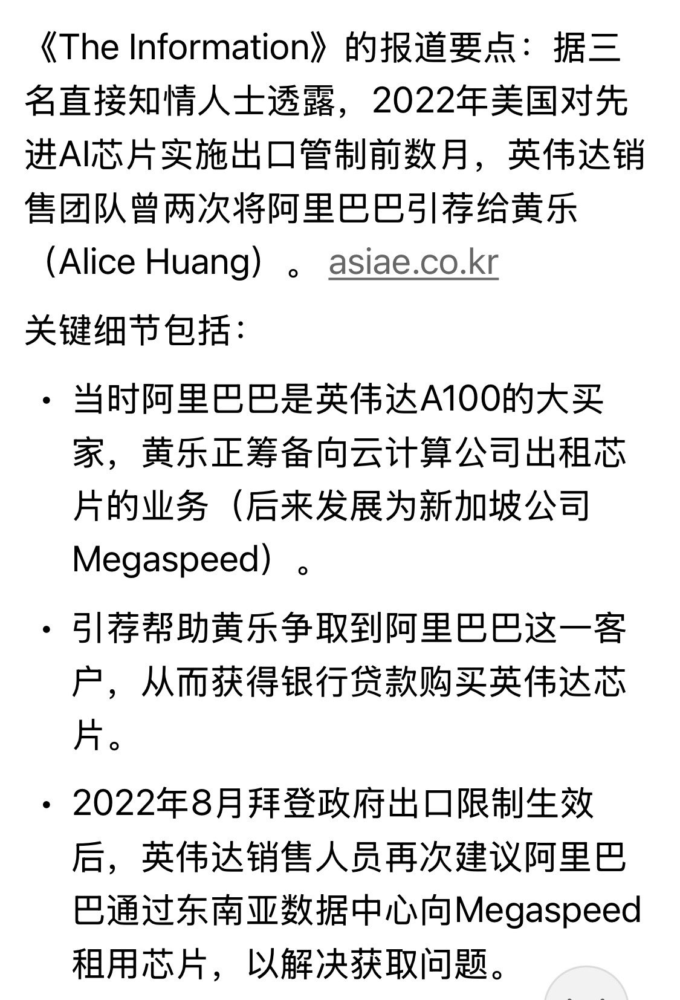
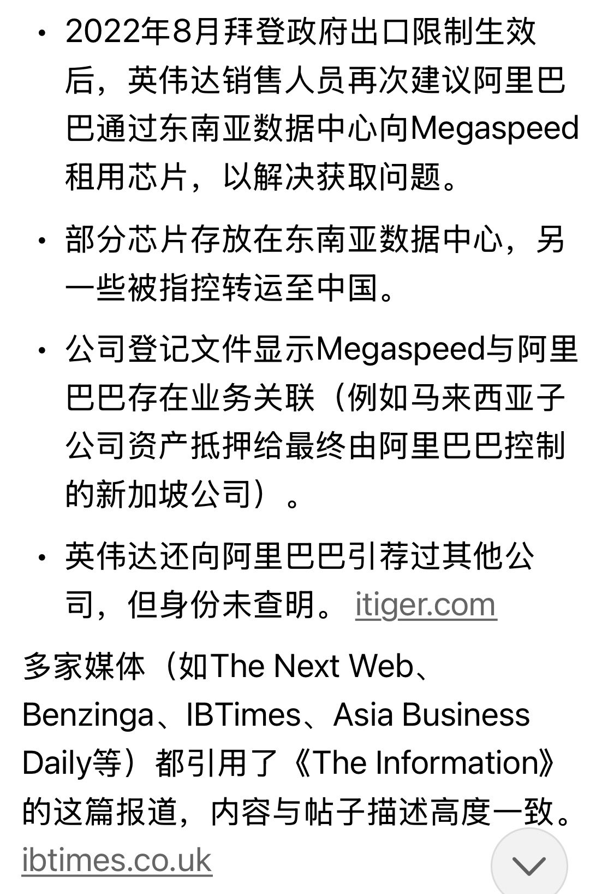

有意思。
如果報導屬實，那走私晶片的始作俑者竟然是黃仁勳。
我太低估他了。
🤣
#黃仁勳那點破事
附圖
作者附了兩張連續截圖，圖中原文為簡體中文，內容像是轉述《The Information》報導的要點。兩張圖中段有重疊。圖 2 右下角有向下捲動按鈕，可見文字在最後一段結束；若畫面外還有下文，此處讀不到，不自行補寫。


圖中文字翻譯
以下依兩張圖可見範圍合併翻譯，重疊處只寫一次。圖中出現的網站標記（asiae.co.kr、itiger.com、ibtimes.co.uk）一併保留。
《The Information》的報導要點：據三名直接知情人士透露，2022 年美國對先進 AI 晶片實施出口管制前數月，輝達（NVIDIA，圖中寫作「英偉達」）銷售團隊曾兩次將阿里巴巴引薦給黃樂（Alice Huang）。asiae.co.kr
關鍵細節包括：
- 當時阿里巴巴是輝達 A100 的大買家，黃樂正籌備向雲端運算公司出租晶片的業務（後來發展為新加坡公司 Megaspeed）。
- 這項引薦幫助黃樂爭取到阿里巴巴這個客戶，進而取得銀行貸款購買輝達晶片。
- 2022 年 8 月拜登政府出口限制生效後，輝達業務人員再次建議阿里巴巴透過東南亞資料中心向 Megaspeed 租用晶片，以解決取得的問題。
- 部分晶片存放在東南亞資料中心，另一些被指控轉運至中國。
- 公司登記文件顯示 Megaspeed 與阿里巴巴存在業務關聯（例如馬來西亞子公司資產抵押給最終由阿里巴巴控制的新加坡公司）。
- 輝達還向阿里巴巴引薦過其他公司，但身分未查明。itiger.com
多家媒體（如 The Next Web、Benzinga、IBTimes、Asia Business Daily 等）都引用了《The Information》的這篇報導，內容與貼文描述高度一致。ibtimes.co.uk